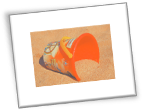

This course uses Modules to organize the readings and activities for each week. Modules work like a bucket of content. I place details on all the readings and activities for each week in a Module.
To find out what is happening during the first week of class, you would check the Module for the first week. For the second week of class, you’d check the Module for the second week, and so forth.
You will see a list of text information and links to readings and activities. The module is arranged in this order:
Start with the Instructions, which tell you what to do with everything in the bucket and give you the suggested due dates for the work. After you read the Instructions, you will know what you need to do with the rest of the things in the Module bucket.
More information in “A Module in Canvas is like a bucket,” from A Short Guide to English 3764: Technical Writing.